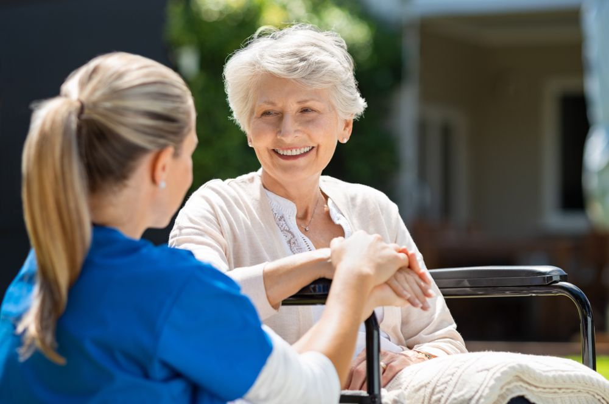

Cuidado y acompañamiento de confianza
Brindamos seguridad, tranquilidad y apoyo para tus seres queridos en sus citas médicas y actividades cotidianas.
Solicita Información¿Quiénes somos?
En Ernes, nos dedicamos a brindar un servicio de acompañamiento seguro y confiable para adultos mayores y personas con movilidad reducida, ayudando a mejorar su calidad de vida y proporcionando tranquilidad a sus familias.
Nuestros servicios
Acompañamiento a citas Médicas
Ofrecemos transporte seguro y personal capacitado en primeros auxilios para acompañar a los usuarios a sus citas médicas y actividades diarias.
Asistencia personalizada
Brindamos asistencia personalizada, incluyendo el uso de sillas de ruedas y otros equipos de apoyo según la necesidad de cada usuario.
Por qué elegirnos
En Ernes, nos destacamos por nuestra atención inmediata, personal altamente calificado y un servicio personalizado que se adapta a las necesidades individuales de cada usuario.
- Tranquilidad para tu Familia: Sabes que tus seres queridos están en buenas manos.
- Personal Capacitado: Nuestro equipo está entrenado en primeros auxilios y cuidados médicos.
- Accesibilidad: Ofrecemos una solución asequible y flexible para el cuidado y acompañamiento.
Contacto
Contáctanos para conocer más sobre nuestros servicios de acompañamiento. Estamos aquí para ayudarte.